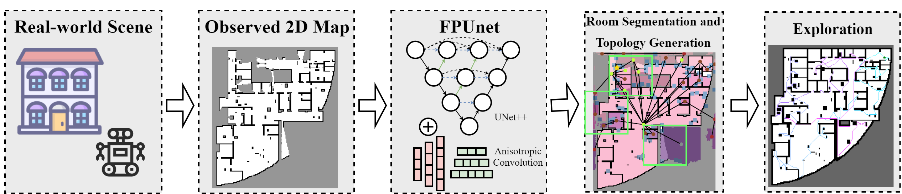
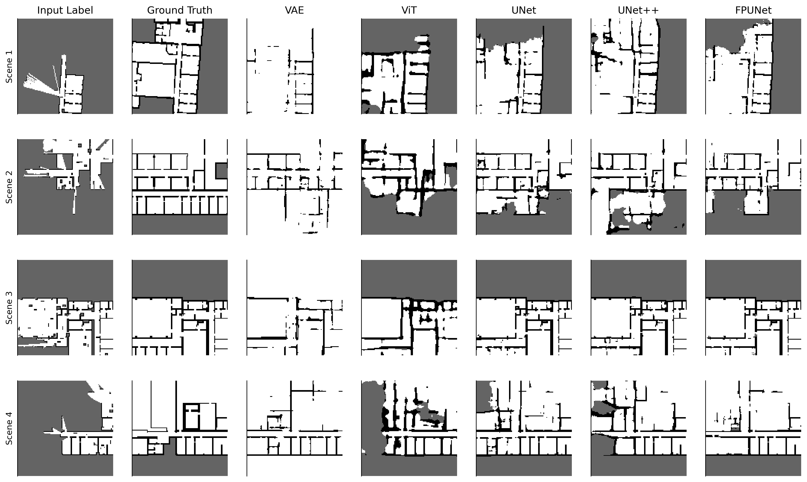
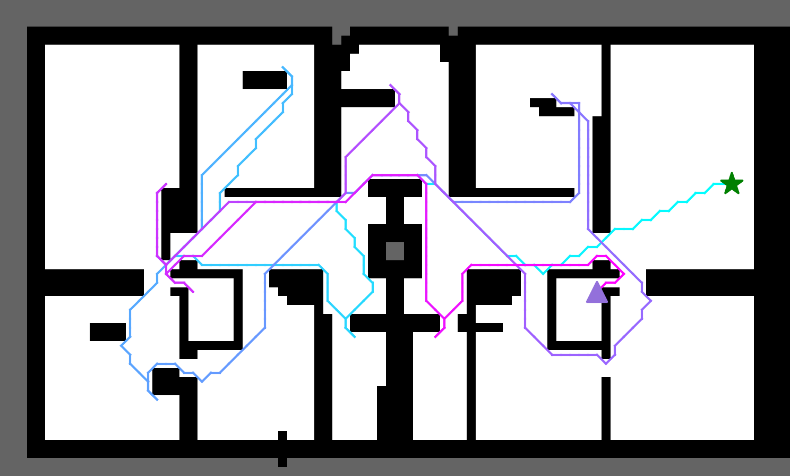
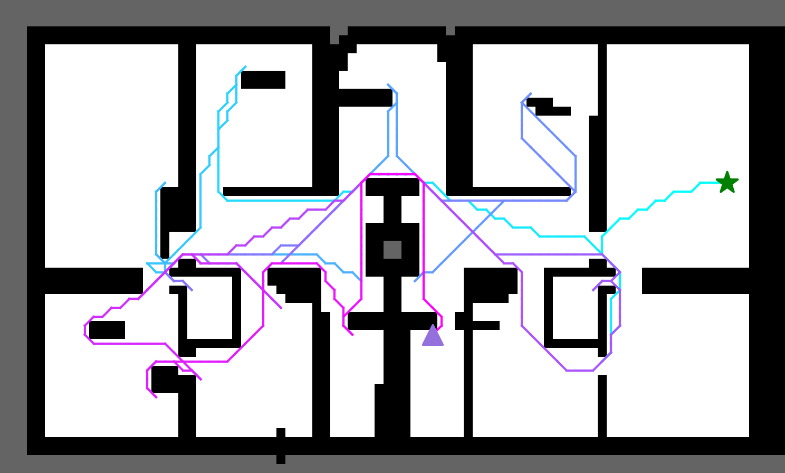
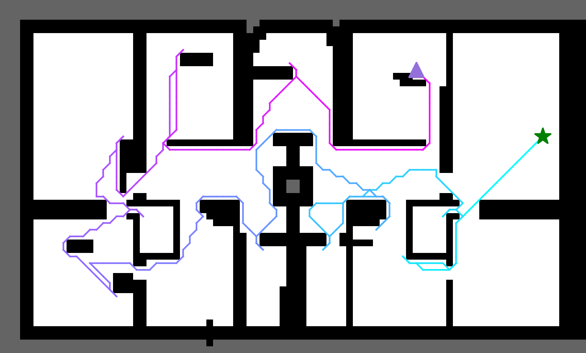
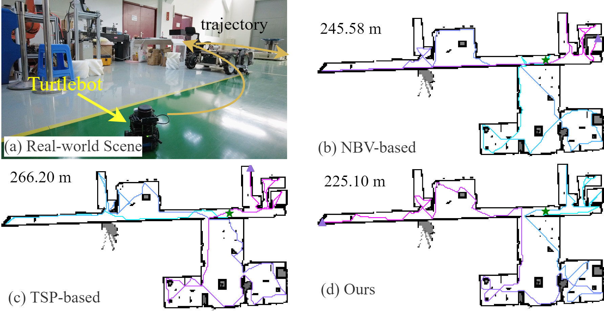

P2Explore: Efficient Exploration in Unknown Clustered Environment with Floor Plan Prediction
P2 Explore:
Efficient Exploration in Unknown Cluttered Environment with Floor Plan Prediction
Kun Song1, Gaoming Chen1, Masayoshi
Tomizuka2, Wei Zhan2, Zhenhua Xiong1, Mingyu Ding2
1Shanghai Jiao Tong University,
2University of California, Berkeley
Abstract.
Robot exploration aims at the reconstruction of unknown environments, and it is important to achieve it with shorter paths. Traditional methods focus on optimizing the visiting order of frontiers based on current observations, which may lead to local-minimal results. Recently, by predicting the structure of the unseen environment, the exploration efficiency can be further improved. However, in a cluttered environment, due to the randomness of obstacles, the ability to predict is weak. Moreover, this inaccuracy will lead to limited improvement in exploration. Therefore, we propose FPUNet which can be efficient in predicting the layout of noisy indoor environments. Then, we extract the segmentation of rooms and construct their topological connectivity based on the predicted map. The visiting order of these predicted rooms is optimized which can provide high-level guidance for exploration. The FPUNet is compared with other network architecture which demonstrates it is the SOTA method for this task. Extensive experiments in simulations show that our proposed method can benefit the exploration efficiency.
Overview of Proposed Method

In this work, we focus on the scenario of 2D exploration. To perform map prediction in cluttered environments:
- Step 1: FPUNet is used to perform map prediction on local maps.
- Step 2: Local maps are merged into a global predicted map.
- Step 3: The predicted map is used to construct the segmentation of rooms and their connectivity.
- Step 4: Visiting order of all rooms including the predicted rooms is optimized.
- Step 5: Next target for exploration is selected based on this guidance.
Experiments
Example of Using Prediction in Exploration
Comparison Study of Map Prediction Accuracy
Comparison of Map Prediction Results
| Methods |
Recall (%) |
Precision (%) |
F1 Score |
Params (M) |
MACs (G) |
| VAE [Shrestha et al., 2019] |
41.5 |
60.7 |
0.493 |
27.7 |
6.01 |
| ViT [Dosovitskiy et al., 2020] |
63.4 |
52.2 |
0.576 |
80.7 |
3.51 |
| UNet [Ronneberger et al., 2015] |
80.4 |
70.1 |
0.749 |
7.76 |
3.43 |
| UNet++ [Zhou et al., 2018] |
78.5 |
76.0 |
0.772 |
11.8 |
12.5 |
| FPUNet |
76.1 |
84.6 |
0.801 |
20.7 |
14.6 |
Qualitative Analysis of Map Prediction Results

Note that in
VAE, we follow the implementation in
[Shrestha et al., 2019] which only contains predicted information of two types: free and obstacles.
Comparison Study of Exploration Efficiency
Comparison and ablation studies of exploration efficiency. Evaluation metric: path length (m).
| Method |
Area Size |
Small
(<200 m²) |
Middle
(200-600 m²) |
Large
(>600 m²) |
| NBV |
87.20 (42.54) |
379.55 (110.12) |
948.34 (486.97) |
| TSP |
71.77 (38.85) |
261.65 (94.18) |
652.31 (402.99) |
| Prediction+NBV |
62.50 (27.76) |
255.08 (81.76) |
654.76 (339.06) |
| P² Explore |
58.71 (29.16) |
249.51 (81.71) |
620.19 (287.25) |
Qualitative Comparison of Exploration Efficiency

NBV

TSP

P2 Explore
Real-world Experiments
